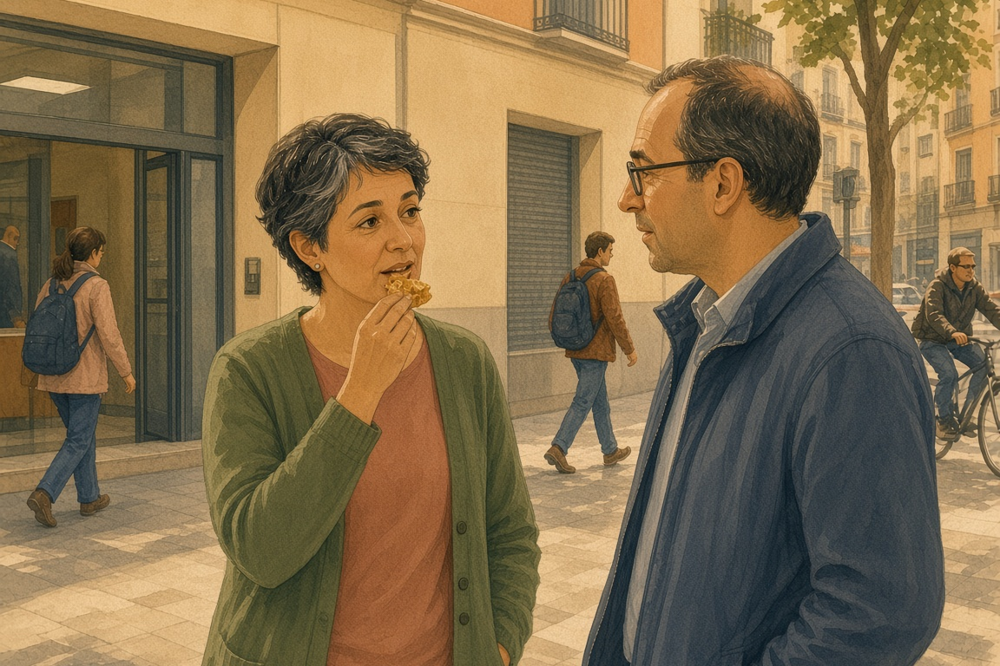

- B2
- Un tópico
La siesta, más leyenda que costumbre
Un colega en Boston lo tenía claro: en España, todo el mundo duerme la siesta. Madrid lo desmintió.
Texto
Cuando dije en mi oficina de Boston que iba a pasar un mes en Madrid, un colega sonrió: «Vas a dormir la siesta todos los días, ¿no? En España todo el mundo lo hace».
Llegué con esa postal en la cabeza: persianas cerradas, calles vacías y una nación entera dormida después del almuerzo. La realidad me corrigió rápido. El primer jueves salí a las cuatro de la tarde, seguro de encontrar un silencio total. En el centro vi oficinas abiertas, gente en el metro y turistas con mochila. Algunas tiendas pequeñas sí cierran un rato al mediodía, sobre todo en ciudades más chicas o en verano, cuando el calor aprieta. Pero «todo el mundo duerme» no es un dato. Es un estereotipo cómodo.
Una encuesta de 2024 en España, con dos mil personas adultas, indica que, más o menos, una de cada cuatro duerme la siesta de forma habitual. El resto la toma solo a veces, o no la toma casi nunca. Es decir: la siesta existe, pero no define a un país entero. Lo que sí es cierto —y esto se siente en el cuerpo— es el horario. El almuerzo puede ser a las dos o a las tres. La cena, a las nueve o más tarde. El día se estira, y un descanso breve de quince o veinte minutos, cuando hay suerte y un sofá, resulta más fácil que una hora rendido en la cama.
En mi edificio, mi vecina Elena, que trabaja en un hospital, se rió cuando le conté el comentario de Boston: «Ojalá. Yo almuerzo en veinte minutos y vuelvo». Un día almorzamos de pie, frente al hospital, con prisa: hubo conversación, no una cama. Me dijo que, para ella, «siesta» a veces es solo cerrar los ojos diez minutos en un sofá, si el turno lo permite. Su hermano, que vive en un pueblo de Andalucía, a veces sí se acuesta un rato en agosto, cuando el calor no deja trabajar a mediodía. Las dos cosas caben en el mismo país, y ninguna de las dos es una ley.

Ahora, cuando alguien habla de «la siesta española» como si fuera una ley, yo cuento esta historia. Relativizar un tópico no es negar el calor ni el horario. Es mirar a las personas de cerca. Algunas duermen. Muchas, no. Y casi todas cenan tarde. Ahora me alegra, de verdad, que el mito sea siempre más simple que la vida.